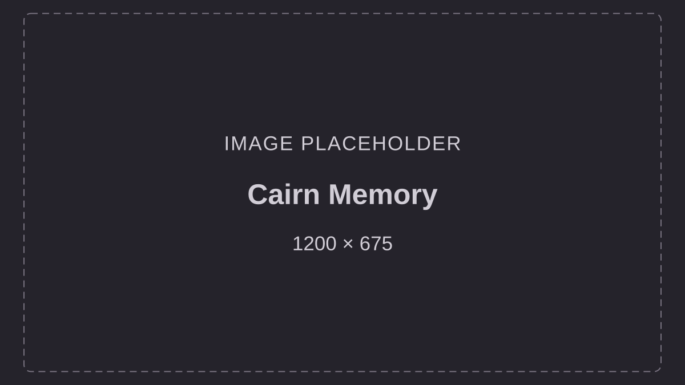
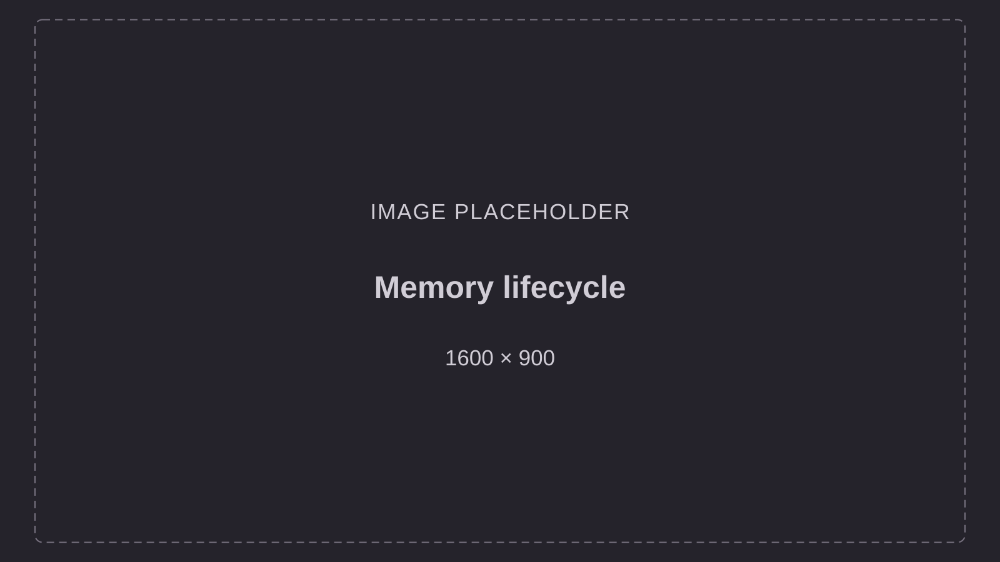

Personal
Knowledge authorized for an individual Delver.
REMEMBER THE JOURNEY
Cairn Memory is the independent memory foundation selected by Arcane Warren.
Concept blueprint
CLEAR BOUNDARIES
Like stones marking a trail, useful decisions, discoveries and failures can guide later work. Warren consumes Cairn rather than building a competing memory service. Artifacts and execution logs remain separate from distilled knowledge.
Visit Cairn Memory ↗INTENDED DESIGN
Knowledge authorized for an individual Delver.
Project-specific decisions, findings and context.
Curated reusable organization-wide lessons.
These are intended mappings, not verified access controls. Confirm Cairn's native scopes and authorization model before use. Circle-level memory is a possible extension.
LEARNING LOOP

Retrieve relevant authorized knowledge.
Test knowledge against current evidence.
Extract useful outcomes, context and provenance.
Store appropriate lessons and correct outdated records.
VALIDATION REQUIRED